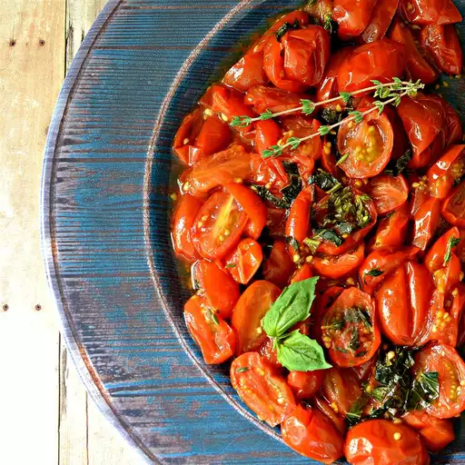

Tomates Asados

Descripción
Esta es una guarnición maravillosa y saludable para el verano.
Prepárelo solo cuando los tomates uva estén en temporada,
¡su sabor es clave! Genial al horno o a la parrilla.
Ingredientes
-
1 libra de tomates uva, cortados por la mitad
-
1 cucharada de aceite de oliva
-
2 dientes de ajo, picados
-
5 hojas de albahaca fresca, picadas
-
1 cucharadita de tomillo fresco picado
-
sal al gusto.
Pasos
- Precaliente el horno a 350 grados F (175 grados C).
-
Coloque los tomates en un cuadrado grande de papel de aluminio.
Rocíe aceite de oliva sobre los tomates y cubra con ajo, albahaca, tomillo y sal.
Envuelva la mezcla de tomate
con papel de aluminio sellando herméticamente para mantener los jugos dentro.
-
Hornee en el horno precalentado hasta que los tomates estén tiernos,
aproximadamente 30 minutos. Dejar enfriar un poco.